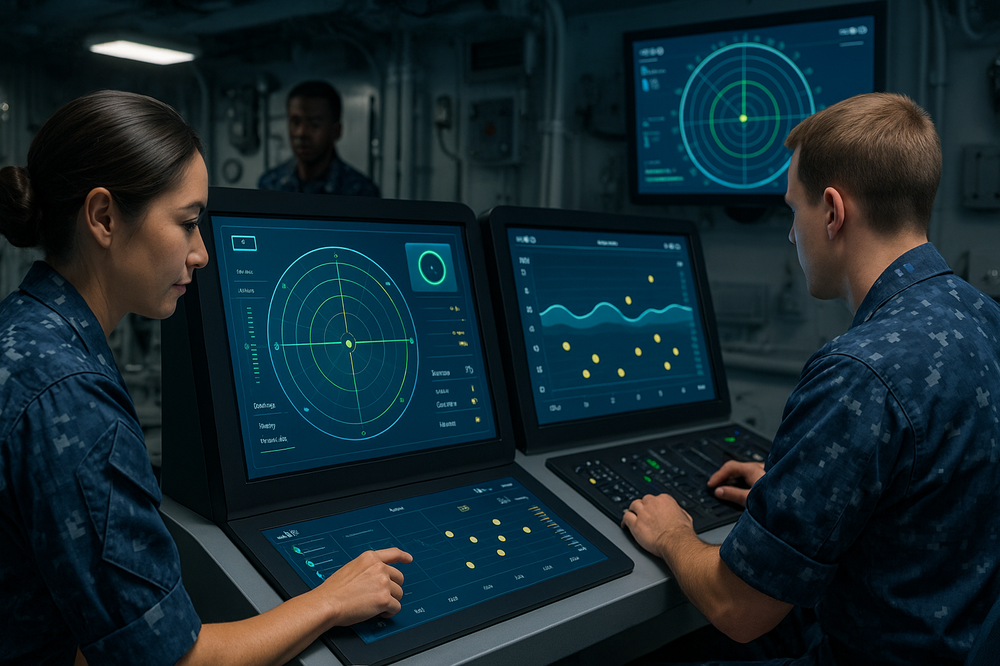
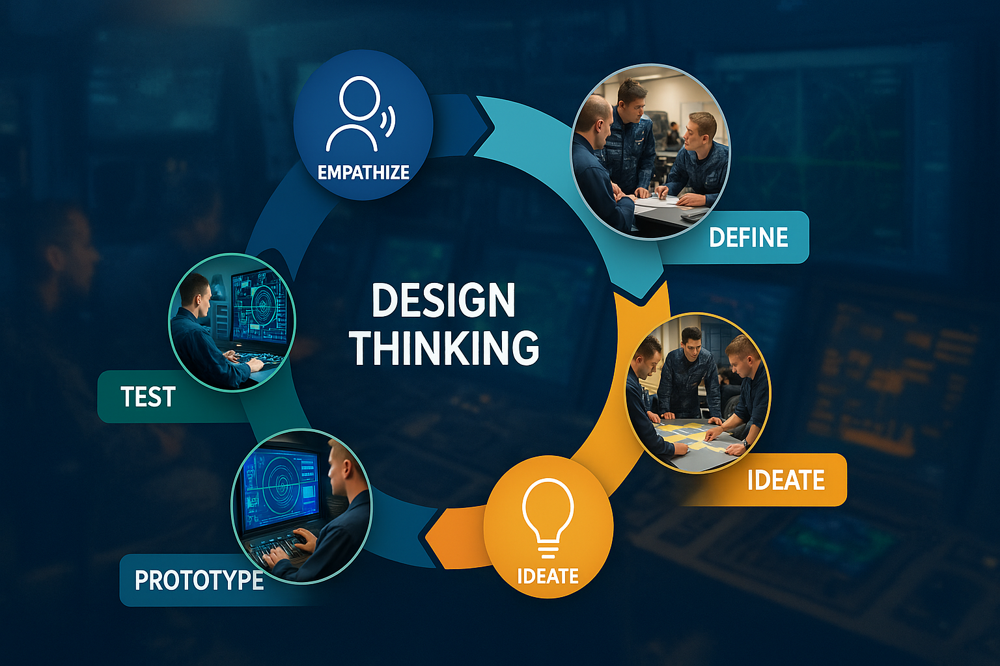

Background: The U.S. Navy Submarine Force faced growing complexity in its control room operations. Sailors described frustration with cluttered, outdated displays that slowed decision-making and required long training times. By listening directly to these operators and observing their daily workflows, the design team developed empathy for the sailors’ needs — a crucial first step in applying Design Thinking to improve situational awareness at sea. (Hall, 2012, ch. III–IV)
Define: Guided by facilitators from IDEO, officers and enlisted personnel reframed what initially seemed like a “technology issue” into a human-centered design challenge: How might we help sailors see, understand, and respond to information faster and more intuitively? Empathy interviews and quick contextual inquiry reveal three primary needs:
Constraints: no new networked tablets; anything electronic must be approved and ruggedized; space for tools is limited to a clipboard footprint.
Ideate:Through collaborative ideation sessions, participants brainstormed new ways to simplify data visualization and reduce cognitive load — focusing not on adding tools, but on improving usability. (Hall, 2012, pp. 73–82)

The team translated these insights into early prototypes for redesigned control interfaces.
Setup: The teams sketched two concepts for a pilot:
Leadership is open to whichever reduces cognitive load fastest within policy. What should you test first?

Iterative testing with sailors led to clean, modern displays that improved awareness and dramatically shortened the learning curve for new operators. The result demonstrated the power of Design Thinking in the military context — using empathy, collaboration, and rapid prototyping to solve complex human-technology challenges beneath the surface. (Hall, 2012, pp. 79–87)